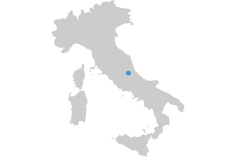

L'Aquila, Italy
On April 6, 2009, an earthquake of 6.3 magnitude struck central Italy with its epicentre near L'Aquila. The earthquake caused damage to between 3,000 and 10,000 buildings in the ciy and several buildings collapsed. 308 people were killed by the earthquake, and approximately 1,500 people were injured. Around 65,000 people were made homeless.

table of contents
The aim of this manual is to collect, structure and enable the transferability of the experiences carried out in the L’Aquila Case Study during the implementation of the EDUCEN project. In order to enhance the readability of the manual, the performed activities have been clustered in two main groups:
- The cluster for the analysis of the network of interaction among different emergency responders, which aimed at mapping and analysing the complex network of interactions taking place in case of emergency. To this aim, storyline approach, cognitive mapping and social network analysis methods were sequentially implemented.
- The cluster for the analysis of soft and hard infrastructure resilience, which aimed at better comprehend how soft and hard infrastructures interact in order to make the whole urban system more resilient in case of disaster. To this aim, system dynamic modelling and graph theory were adopted.
Both activities were developed and calibrated referring to the retrospective analysis of the earthquake in 2009.